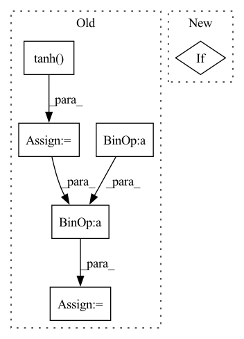

Pattern ID :35069
Before Change
out = self.fc3(x)
mu, log_std = out.chunk(2, dim=-1)
if self.dist_impl == "pyd":
log_std = torch.tanh( log_std)
log_std = self.log_std_low + 0.5 * (
self.log_std_high - self.log_std_low
) * (log_std + 1)
std = log_std.exp()
dist = distributions.SquashedNormal(mu, std)
elif self.dist_impl == "beta":
out = 1.0 + F.softplus(out)After Change
return distributions.create_tanh_normal(
out, self.log_std_low, self.log_std_high
)
elif In pattern: SUPERPATTERN
Frequency: 3
Non-data size: 6
Instances Fragment ID: 100132661
Project Name: jakegrigsby/super_sac
Commit Name: b4650419bf361d2ce588d7b2ad7247b4289952cc
Time: 2022-01-02
Author: jcg6dn@virginia.edu
File Name: super_sac/nets/mlps.py
M Class Name: ContinuousStochasticActor
N Class Name: ContinuousStochasticActor
M Method Name: forward(2)
N Method Name: forward(2)
M Parent Class: nn.Module
N Parent Class: nn.Module
M File Name: super_sac/nets/mlps.py
N File Name: super_sac/nets/mlps.py
M Start Line: 35
M End Line: 48
N Start Line: 35
N End Line: 43
Before Change
def abs_loss(self, _input: torch.Tensor, atanh_mark: torch.Tensor, atanh_mask: torch.Tensor,
layer: str, neuron: int, next_neuron: int):
mark = atanh_mark.tanh() .mul(0.5).add(0.5)
mask = atanh_mask.tanh().mul(0.5).add(0.5) * self.nc_mask
X = _input + mask * (mark - _input)
_dict: Dict[str, torch.Tensor] = self.model.get_all_layer(X)
tinners = _dict[layer]
logits = _dict["logits"]
vloss1 = tinners[:, neuron].sum()
vloss2 = tinners.sum() - vloss1
tvloss = total_variation(mark)
mask_loss = mask.sum()After Change
if (self.count_mask and mask_nz > (math.sqrt(self.max_troj_size) + 2)**2) \
or (not self.count_mask and mask_loss > 100):
mask_loss *= 2 * self.remask_weight
elif Fragment ID: 100132721
Project Name: ain-soph/trojanzoo
Commit Name: 1684c28ef38502abb83d37beb845b69007e33274
Time: 2020-07-07
Author: ain-soph@live.com
File Name: trojanzoo/defense/backdoor/abs.py
M Class Name: ABS
N Class Name: ABS
M Method Name: abs_loss(7)
N Method Name: abs_loss(7)
M Parent Class: Defense_Backdoor
N Parent Class: Defense_Backdoor
M File Name: trojanzoo/defense/backdoor/abs.py
N File Name: trojanzoo/defense/backdoor/abs.py
M Start Line: 231
M End Line: 252
N Start Line: 260
N End Line: 283
Before Change
// 1.0 / derivative of tanh contraction
x = (x - aabb_min) / (aabb_max - aabb_min)
x = x - 0.5
scaling = 1.0 / (
torch.clamp(1.0 - torch.tanh( x) ** 2, min=1e6) * 0.5
)
scaling = scaling * (aabb_max - aabb_min)
else:
scaling = aabb_max - aabb_min
step_size = step_size * scaling.norm(dim=-1, keepdim=True)After Change
def query_opacity(self, x, step_size):
density = self.query_density(x)
if self.unbounded:
// NOTE: In principle, we should use the following formula to scale
// up the step size, but in practice, it is somehow not helpful.
// derivitive = contract_to_unisphere(x, self.aabb, derivative=True) Fragment ID: 100132714
Project Name: kair-bair/nerfacc
Commit Name: b969818e263af6cc67f4d4de76791a5a812b6378
Time: 2022-09-28
Author: ruilongli94@gmail.com
File Name: examples/radiance_fields/ngp.py
M Class Name: NGPradianceField
N Class Name: NGPradianceField
M Method Name: query_opacity(3)
N Method Name: query_opacity(3)
M Parent Class: torch.nn.Module
N Parent Class: torch.nn.Module
M File Name: examples/radiance_fields/ngp.py
N File Name: examples/radiance_fields/ngp.py
M Start Line: 117
M End Line: 129
N Start Line: 142
N End Line: 148